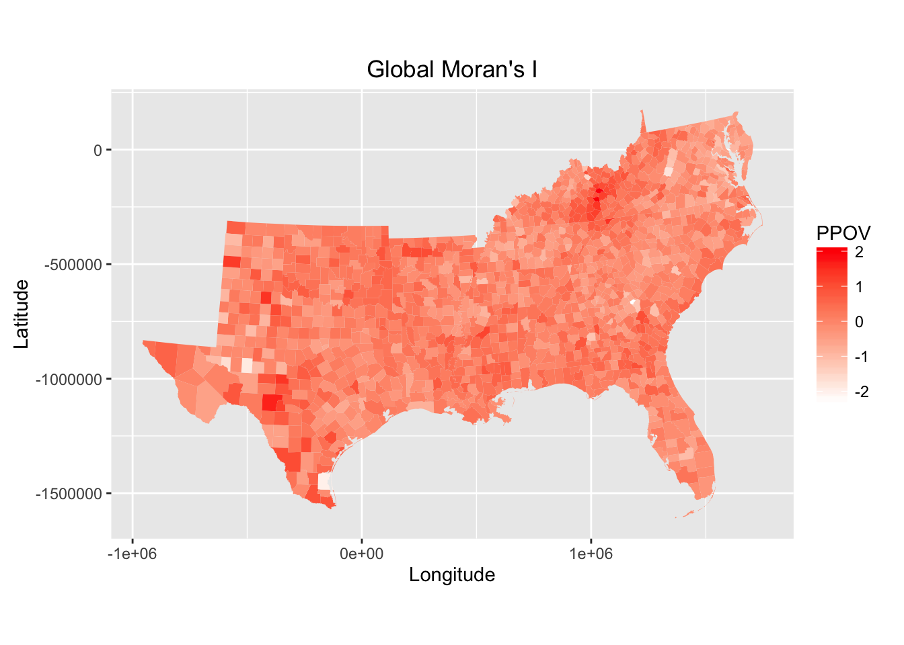

The goal of these exercises is to give you a chance to put the concepts we have been discussing in class into practice. Keep in mind we have only a limited amount of time (one week this time!), so our focus for this lab will be breadth rather than depth!
To get started, let’s load some data. We’re going to use the Southern Counties Data from Voss (2006), which we’ve been working with in class. There are two ways to get this data, the ‘traditional’ way (loading a shapefile), and the ‘easy’ way, loading a ‘pre-packaged’ dataset I have prepared for you:
library(rgdal)
soco = readOGR("Data/south00.shp", layer="south00")## OGR data source with driver: ESRI Shapefile
## Source: "Data/south00.shp", layer: "south00"
## with 1387 features
## It has 17 fieldssummary(soco@data)If the above doesn’t work, you can always get the data from here:
load("Data/soco.rdata")
summary(soco@data) # You might want to check this outThe data contains the following variables/information (this info is also available in the vardescription_south00.csv file). This dataset was originally used to examine intercounty variation in child poverty rates in the US. In particular, the authors used it as a way to demonstate the utility of spatial regression analysis.
| Variable | Description |
|---|---|
| CNTY_ST | County and state name |
| STUSAB | State abbreviation |
| FIPS | FIPS code |
| YCOORD | Y coordinate (meters) |
| XCOORD | X coordinate (meters) |
| SQYCORD | Y coordinate squared (for trend surface) |
| SQXCORD | X coordinate squared (for trend surface) |
| XYCOORD | X coordinate * Y coordinate (for trend surface) |
| PPOV | Proportion of children in poverty |
| PHSP | Proportion Hispanic |
| PFHH | Proportion female-headed households |
| PWKCO | Proportion work outside of county of residence |
| PHSLS | Proportion less than high school educated |
| PUNEM | Proportion unemployed |
| PUDEM | Proportion males underemployed, some work in 1999 |
| PEXTR | Proportion employed in extractive industry |
| PPSRV | Proportion employed in professional services |
| PMSRV | Proportion employed in miscellaneous services |
| PNDMFG | Proportion employed in non-durable manufacturing |
| PNHSPW | Proportion non-Hispanic white |
| PMNRTY | Proportion minority (total - non-Hispanic white) |
| LO_POV | Natural log proportion children in poverty |
| PFRN | Proportion foreign-born |
| PNAT | Proportion native-born |
| PBLK | Proportion African American/black, alone and including Hispanic |
| P65UP | Proportion 65 and older |
| PDSABL | Proportion disabled |
| METRO | Metro county |
| PERPOV | Persistent poverty, 1970-2000 (ERS) |
| OTMIG | Rate of out-migration |
| BINMIG | Rate of black in-migration from non-south |
| INCARC | Proportion males 18-64 in correctional institutions |
| BINCARC | Proportion black males 18-64 in correctional institutions |
| SQRTPPOV | Square root proportion children in poverty |
| SQRTUNEM | Square root proportion unemployed |
| SQRTPFHH | Square root proportion female-headed households |
| LOGHSPLS | Natural log proportion less than high school educated |
| PHSPLUS | Natural log proportion high school educated or more |
The response variable we are interested in is PPOV, which describes the proportion of children living in poverty in each county. So first things first, create a choropleth map that shows the distribution of PPOV across the sothern states:
library(maptools)
library(RColorBrewer)
library(classInt)
# Consider using quantiles class breaks, or a 'ramp-style' palette
# Show R code to produce a choropleth map of PPOV
# palette = colorRampPalette(c("lightblue", "darkblue"), space = "rgb")
# spplot(soco, "PPOV", col.regions=palette(20),
# main="Distribution of poverty across the sothern states")
# Create Categories based on quantiles
# cats7 = classIntervals(soco$PPOV, n=7, style="quantile")
# pal7 = brewer.pal(7, "YlGnBu")
# seven_cols = findColours(cats7, pal7)
# plot(soco, col=seven_cols, lty=0)
library(ggplot2) # Plotting and stuff
#soco@data$id <- as.numeric(rownames(soco@data))-1
class(soco) # Not a regular data.frame...## [1] "SpatialPolygonsDataFrame"
## attr(,"package")
## [1] "sp"new_map = fortify(soco, region="FIPS")
class(new_map) # Now we have a regular data.frame!## [1] "data.frame"new_map<-merge(new_map,soco@data,by.x="id",by.y="FIPS")
p = ggplot(data=new_map, aes(x=long, y=lat, group=group))
p + geom_polygon(aes(fill=PPOV)) + coord_equal() + labs(x="Longitude", y="Latitude", title="Proportion of poverty across the sothern states") + scale_fill_gradient('PPOV', low = "white", high = "red", space = "Lab", na.value = "grey50", guide = "colourbar")R doesn’t have a ton of fancy tools for mapping, but it does a pretty good job of quickly giving us the information we will need to do our due diligence on the relationships in our data. If this were a real project then we would need to undertake the above steps for all of our independent variables, but for now we will just proceed with PPOV (our response; done already) and PFHH. In addition to the plots, note if there is any observable spatial co-variation in these variables:
# Show R code to produce choropleth map of PFHH variable
p = ggplot(data=new_map, aes(x=long, y=lat, group=group))
p + geom_polygon(aes(fill=PFHH)) + coord_equal() + labs(x="Longitude", y="Latitude", title="Proportion female-headed households across the sothern states") + scale_fill_gradient('PPOV', low = "white", high = "red", space = "Lab", na.value = "grey50", guide = "colourbar")# Is there any notable co-variation in the above two variables
# Yes, some similar paterns can be seen all over placeIt is also always important to examine the underlying attribute distribution of your variables (i.e., via histograms, density plots, etc). Create histograms and any other relevant plots to give us an idea of the underlying distribution of the PPOV and PFHH variables from our dataset. What do you notice about these variables?
# Show R code to produce histograms of the `PPOV` and `PFHH` variables
g = ggplot( data = soco@data, aes( x = PPOV ))
g + geom_histogram(bins = 50, col = 'blue') g = ggplot( data = soco@data, aes( x = PFHH ))
g + geom_histogram(bins = 50, col = 'blue') # The variables PPOV and PFHH pretty much the same distributionNow that we have an idea of the spatial and aspatial distribution of these variables, it is time to look at their relationships with each other. Create a scatterplot of PPOV with PFHH and note any potentially important relationships you observe:
# Show R code to produce a scatterplot of `PPOV` with `PFHH`
r = ggplot( data = soco@data, aes( x = PFHH, y = PPOV ))
r + geom_point() #There is a strong linear positive relationship between these two variableTake the opportunity here to study the relationship between these two key variables. Now add a ‘best fit’ line to the plot (think abline function or geom_abline if you’re using ggplot). What is the slope of this line?
# Show R code to produce a scatterplot of `PPOV` with `PFHH` with a best fit line
# What is the slope of the line? You'll need to fit a model here...
PPOV_PFHH.lm = lm(soco@data$PPOV ~ soco@data$PFHH)
coeffs = coefficients(PPOV_PFHH.lm);
#the slope of line is
coeffs[2]## soco@data$PFHH
## 0.7088505r = ggplot( data = soco@data, aes( x = PFHH, y = PPOV ))
r + geom_point() + geom_abline(aes(slope=coeffs[2],intercept=coeffs[1]), colour="red", size=0.9)Obviously the two variables are positively and fairly strongly correlated. Does it look like there are any outliers here? How might you determine this (no need to show R code here, just make suggestions)?
# How might you determine if there are outliers in the previous scatterplot?
#yes, there are some points that are far form the fitted line. My suggetion is making a confidence interval aorund the fitted line or using the box plot
boxplot(soco@data$PFHH)boxplot(soco@data$PPOV)# Also I ran the Bonferroni test to assesse Outliers. This test identify two outliers
library(car)
outlierTest(PPOV_PFHH.lm)## rstudent unadjusted p-value Bonferonni p
## 1193 5.320031 1.2087e-07 0.00016765
## 467 4.533546 6.3008e-06 0.00873930Bonus: try to take a look at the state-specific relationships between PPOV and PFHH. Does this seem to capture any spatial effects?
# Bonus: Show R code to produce conditional scatterplot of `PPOV` with `PFHH` for each state.
# You'll probably need ggplot for this (facet_wrap)
# In most of the states we can see that these variables are positively and fairly strongly correlated, but in KY, OK, TN, TX and WA correlation is quite weak. In DC and DE also we do not have enough data to make any conclusion.
p = ggplot(data=new_map, aes(x = PFHH, y = PPOV))
p + geom_point(size=.2, alpha = 0.2) + facet_wrap(~ STUSAB)At this point we should have a good feel for some of the descriptive characteristics in our data. There is obviously much more that could be done, but you should have the basic idea at this point. Since some of the things we should have done (Global and Local Spatial Autocorrelation) will be done later in the lab anyway, so we can safely skip over them here. For now though, R is just one more software program that will allow you to run a basic OLS Regression.
Before we get started we need to define a spatial weights matrix. We won’t use it directly here (as we will when we run spatial regression), but R’s spdep allows us to compute Moran’s I for our residuals as well as some other spatial diagnostics on the OLS so we do our matrix now rather than later.
library(spdep)
w_nb = poly2nb(soco, row.names=soco$FIPS, queen=TRUE) # Use queen contiguitySummarize the above neighbors list, and create a simple plot to show overall connectivity. Does this look about right? Which location is the most connected? Bonus: Can you tell me which county this is?
# Show R code to summarize and plot the above neighbors list
summary(w_nb)## Neighbour list object:
## Number of regions: 1387
## Number of nonzero links: 7996
## Percentage nonzero weights: 0.4156424
## Average number of links: 5.76496
## Link number distribution:
##
## 1 2 3 4 5 6 7 8 9 10 11
## 3 20 46 150 313 460 294 83 13 4 1
## 3 least connected regions:
## 48141 51131 54029 with 1 link
## 1 most connected region:
## 13107 with 11 links# Bonus: Which county is the most connected. Tell me the FIPS _and_ name...
#The most connected reagion is Emanuel County in GA with 11 links
library(spdep)
map_crd <- coordinates(soco)
plot(soco, pch=19, cex=0.1, col="grey", border=NA)
plot(w_nb,coords=map_crd,pch=19, cex=0.1, lwd=0.2, col="red", add= TRUE)This neighbors list is just one ‘part’ of weights matrix creation. Convert the above neighbors list into a proper weights object, using row standardised weights (see ?nb2listw):
# Show R code to convert w_nb to a weights matrix (call it w_mat)
w_mat <- nb2listw(w_nb, style="W", zero.policy=TRUE) # create a spatial weights matrixNow we’ll fit an OLS Regression model (call it mod1) using the Southern Counties dataset. Firstly, the dependent variable will be the square root of the percentage of children living in poverty (SQRTPPOV), and your independent variables will include PHSP, PFHH, PUNEM, PEXTR, P65UP, METRO, PHSPLUS. Fow now, we’ll ignore any possible interaction terms etc…
What is the \(R^2\) for this model? Are the coefficients all significant?
# Show R code to fit an OLS Regression model with the above variables
SQRTPPOV = sqrt((soco@data$PPOV))
mod1 = lm(sqrt((PPOV)*100) ~ PHSP + PFHH + PUNEM + PEXTR + P65UP + METRO + PHSPLUS, data = soco@data)
summary(mod1)##
## Call:
## lm(formula = sqrt((PPOV) * 100) ~ PHSP + PFHH + PUNEM + PEXTR +
## P65UP + METRO + PHSPLUS, data = soco@data)
##
## Residuals:
## Min 1Q Median 3Q Max
## -2.26116 -0.28304 0.00346 0.28299 2.01636
##
## Coefficients:
## Estimate Std. Error t value Pr(>|t|)
## (Intercept) 3.09362 0.09790 31.598 < 2e-16 ***
## PHSP 0.71079 0.09903 7.177 1.16e-12 ***
## PFHH 5.29256 0.21091 25.093 < 2e-16 ***
## PUNEM 14.60965 0.63401 23.043 < 2e-16 ***
## PEXTR 3.44671 0.25379 13.581 < 2e-16 ***
## P65UP 2.21940 0.35748 6.208 7.07e-10 ***
## METRO -0.10478 0.03193 -3.281 0.00106 **
## PHSPLUS -2.83509 0.13695 -20.702 < 2e-16 ***
## ---
## Signif. codes: 0 '***' 0.001 '**' 0.01 '*' 0.05 '.' 0.1 ' ' 1
##
## Residual standard error: 0.4544 on 1379 degrees of freedom
## Multiple R-squared: 0.7797, Adjusted R-squared: 0.7786
## F-statistic: 697.3 on 7 and 1379 DF, p-value: < 2.2e-16# What is the R^2 value? Are the coefficients significant?
#The R^2 is 0.7797 that is considered quite high. The coefficients are also significant as they all have small p-valueThis leaves us to interpret the various output statistics. Some things to pay attention to: * Log likelihood: higher, better, (less negative) * Aikake info criterion (AIC): lower, better * Others?
These are all aspatial diagnostics and mostly they will give us information in a comparative sense. We should also look for multicollinearity; what is a good test for this (remember, multicolinearity inflates the standard errors (variance) of the coefficients)? Perform this test; is multicolinearity going to be a problem here?
library(car)
# Show R code to run a test for the effects (variance inflation) of multicolinearity
# Evaluate Collinearity
#The cuttoff is 2.5. So here we do not have collinear variables
vif(mod1) # variance inflation factors ## PHSP PFHH PUNEM PEXTR P65UP METRO PHSPLUS
## 1.315538 1.540307 1.683439 1.589017 1.238624 1.611275 1.368839What about heteroscedasticity (non-constant variance of the residuals)? There is a nice test for this too (ncvTest from the car package), is it significant here? Note: this test is sometimes also called the Breusch-Pagan test.
# Show R code to run ncvTest and determine if it is significant
# P-value is quite small and so the it is significant
library(lmtest)
bptest(mod1)##
## studentized Breusch-Pagan test
##
## data: mod1
## BP = 85.846, df = 7, p-value = 8.799e-16ncvTest(mod1)## Non-constant Variance Score Test
## Variance formula: ~ fitted.values
## Chisquare = 30.19656 Df = 1 p = 3.904003e-08The potential problems we have with heteroskedasticity could be ameliorated by transforming some of our variables, and/or reducing the impact of certain outliers. Whether or not your discipline thinks this is appropriate statistical technique is up to you. For now we will leave this be, but recall from the lecture that heteroskedasticity is a violation of one of the key assumptions of OLS and its presence should throw into question the validity of your model.
What about the residuals, are they normally distributed? What are some good ways to test this: visually and statistically (the moments package has some useful tests for this)?
# R code to test for normally distributed errors (plot and/or test statistic)
# based on this histgram the residuals nearly have a normal distribution
library(MASS)
sresid <- studres(mod1)
hist(sresid, freq=FALSE,
main="Distribution of Studentized Residuals")
xfit<-seq(min(sresid),max(sresid),length=40)
yfit<-dnorm(xfit)
lines(xfit, yfit) #qq plot for studentized resid
# Based on the qq plot the the residuals have a normal distribution. We have a set of outliers too.
qqPlot(mod1, main="QQ Plot")#Null hypothesis residuals are normally distributed
# The null hypothesis can be rejected based on this test. But it seems this happened because there are some outliers.
shapiro.test(resid(mod1))##
## Shapiro-Wilk normality test
##
## data: resid(mod1)
## W = 0.9881, p-value = 3.204e-09Now its time to decide if we need to pursue spatial regression models to counteract any of the issues we’ve observed so far. We can use Anselin’s decision tree framework to help us here:
Firstly, we’ll explore Moran’s I calculated on the OLS residuals. In this example, what does this show?
# Show R code to run a Global Moran's I test for residual spatial autocorrelation
plot(residuals(mod1), fitted(mod1))lm.morantest(mod1,w_mat) #Moran's I test for residual spatial autocorrelation##
## Global Moran I for regression residuals
##
## data:
## model: lm(formula = sqrt((PPOV) * 100) ~ PHSP + PFHH + PUNEM +
## PEXTR + P65UP + METRO + PHSPLUS, data = soco@data)
## weights: w_mat
##
## Moran I statistic standard deviate = 19.381, p-value < 2.2e-16
## alternative hypothesis: greater
## sample estimates:
## Observed Moran I Expectation Variance
## 0.3081320277 -0.0030597865 0.0002578173# The Moran's I value is 0.308 with very samll p-value and therefore significant. So the the residuals are correlatedWe can also perform the Lagrange Multiplier tests. These help us to calculate the ‘effectiveness’ of the two forms of spatial regression model, along with their robust forms. The way we read this is we look to see if the lag LM is significant. Then we look at the error LM. If only one is significant then the metrics point to that type of model. If both are significant then we forget what we just read and pick the higher of the two robust scores. Run the lm.LMtests to help us decide which spatial regression model to use going forward:
# this test is significant
lm.LMtests(mod1,w_mat, test="all")##
## Lagrange multiplier diagnostics for spatial dependence
##
## data:
## model: lm(formula = sqrt((PPOV) * 100) ~ PHSP + PFHH + PUNEM +
## PEXTR + P65UP + METRO + PHSPLUS, data = soco@data)
## weights: w_mat
##
## LMerr = 362.58, df = 1, p-value < 2.2e-16
##
##
## Lagrange multiplier diagnostics for spatial dependence
##
## data:
## model: lm(formula = sqrt((PPOV) * 100) ~ PHSP + PFHH + PUNEM +
## PEXTR + P65UP + METRO + PHSPLUS, data = soco@data)
## weights: w_mat
##
## LMlag = 300.35, df = 1, p-value < 2.2e-16
##
##
## Lagrange multiplier diagnostics for spatial dependence
##
## data:
## model: lm(formula = sqrt((PPOV) * 100) ~ PHSP + PFHH + PUNEM +
## PEXTR + P65UP + METRO + PHSPLUS, data = soco@data)
## weights: w_mat
##
## RLMerr = 132.94, df = 1, p-value < 2.2e-16
##
##
## Lagrange multiplier diagnostics for spatial dependence
##
## data:
## model: lm(formula = sqrt((PPOV) * 100) ~ PHSP + PFHH + PUNEM +
## PEXTR + P65UP + METRO + PHSPLUS, data = soco@data)
## weights: w_mat
##
## RLMlag = 70.706, df = 1, p-value < 2.2e-16
##
##
## Lagrange multiplier diagnostics for spatial dependence
##
## data:
## model: lm(formula = sqrt((PPOV) * 100) ~ PHSP + PFHH + PUNEM +
## PEXTR + P65UP + METRO + PHSPLUS, data = soco@data)
## weights: w_mat
##
## SARMA = 433.29, df = 2, p-value < 2.2e-16The Mississippi Delta, Appalachia, and to a lesser extent the U.S. Mexican border are all home to clusters of high residuals. On the plus side, we don’t have any extreme outliers, so our model isn’t performing too badly! Produce a quick map to show this spatial distribution:
# Show R code to produce a basic map of residuals
# Show R code to produce choropleth map of PFHH variable
soco@data$res = resid(mod1)
# palette = colorRampPalette(c("white", "red"), space = "rgb")
# spplot(soco, zcol="res", col.regions=palette(20), main="Global Moran's I", pretty=T, edge.col = "transparent")
new_map = fortify(soco, region="FIPS")
class(new_map) # Now we have a regular data.frame!## [1] "data.frame"new_map<-merge(new_map,soco@data,by.x="id",by.y="FIPS")
p = ggplot(data=new_map, aes(x=long, y=lat, group=group))
p + geom_polygon(aes(fill=res)) + coord_equal() + labs(x="Longitude", y="Latitude", title="Global Moran's I") + scale_fill_gradient('PPOV', low = "white", high = "red", space = "Lab", na.value = "grey50", guide = "colourbar")
A good way to quantitatively show clustering in the above residuals might be to plot the local spatial autocorrelation statistics (Gi* or Moran’s Ii). For bonus points, compute the local spatial autocorrelation of the above residuals and map them:
# Bonus: compute local moran's Ii (or local getis and ord stat)
# Map results to get an idea of local clustering in residuals
lm1 = localmoran(resid(mod1),w_mat, zero.policy=TRUE)
soco@data$local_moran = (lm1[, "Ii"])
# palette = colorRampPalette(c("white", "red"), space = "rgb")
# spplot(soco, zcol="local_moran", col.regions=palette(20), main="Local Moran's I", pretty=T, edge.col = "transparent")
new_map = fortify(soco, region="FIPS")
class(new_map) # Now we have a regular data.frame!## [1] "data.frame"new_map<-merge(new_map,soco@data,by.x="id",by.y="FIPS")
p = ggplot(data=new_map, aes(x=long, y=lat, group=group))
p + geom_polygon(aes(fill=local_moran)) + coord_equal() + labs(x="Longitude", y="Latitude", title="Local Moran's I") + scale_fill_gradient('PPOV', low = "white", high = "red", space = "Lab", na.value = "grey50", guide = "colourbar")#####################
soco@data$local_moran_Z1 = (lm1[, "Z.Ii"]) # z-scores
# palette = colorRampPalette(c("white", "red"), space = "rgb")
# spplot(soco, zcol="local_moran_Z1", col.regions=palette(20), main="Local Moran's I (z values)", pretty=T, edge.col = "transparent")
new_map = fortify(soco, region="FIPS")
class(new_map) # Now we have a regular data.frame!## [1] "data.frame"new_map<-merge(new_map,soco@data,by.x="id",by.y="FIPS")
p = ggplot(data=new_map, aes(x=long, y=lat, group=group))
p + geom_polygon(aes(fill=local_moran_Z1)) + coord_equal() + labs(x="Longitude", y="Latitude", title="Local Moran's I (z values)") + scale_fill_gradient('PPOV', low = "white", high = "red", space = "Lab", na.value = "grey50", guide = "colourbar")#####################
lm4 = localG(resid(mod1),w_mat, zero.policy=TRUE)
soco@data$local_moran_Z1 = (as.numeric(lm4))
# palette = colorRampPalette(c("white", "red"), space = "rgb")
# spplot(soco, zcol="local_moran_Z1", col.regions=palette(20), main="Local Getis-Ord G* (z values)", pretty=T, edge.col = "transparent")
new_map = fortify(soco, region="FIPS")
class(new_map) # Now we have a regular data.frame!## [1] "data.frame"new_map<-merge(new_map,soco@data,by.x="id",by.y="FIPS")
p = ggplot(data=new_map, aes(x=long, y=lat, group=group))
p + geom_polygon(aes(fill=local_moran_Z1)) + coord_equal() + labs(x="Longitude", y="Latitude", title="Local Moran's I (z values)") + scale_fill_gradient('PPOV', low = "white", high = "red", space = "Lab", na.value = "grey50", guide = "colourbar")In this segment we will run spatial lag and spatial error models and compare the results we will also work at interpreting the models.
We begin, as before with specifying our regression model design: SQRTPPOV ~ PHSP + PFHH + PUNEM + PEXTR + P65UP + METRO + PHSPLUS. We’ll use the same weights matrix as before (w_mat), but this time we’ll fit spatial lag and error models:
# Show R code to fit a spatial lag (lag_mod) and a spatial error (err_mod) model
lag_mod = lagsarlm (SQRTPPOV ~ PHSP + PFHH + PUNEM + PEXTR + P65UP + METRO + PHSPLUS, data = soco@data, w_mat)
summary(lag_mod)##
## Call:lagsarlm(formula = SQRTPPOV ~ PHSP + PFHH + PUNEM + PEXTR + P65UP +
## METRO + PHSPLUS, data = soco@data, listw = w_mat)
##
## Residuals:
## Min 1Q Median 3Q Max
## -0.2399004 -0.0243576 0.0011752 0.0237824 0.1596573
##
## Type: lag
## Coefficients: (asymptotic standard errors)
## Estimate Std. Error z value Pr(>|z|)
## (Intercept) 0.1851461 0.0111780 16.5634 < 2.2e-16
## PHSP 0.0641592 0.0089201 7.1926 6.355e-13
## PFHH 0.4596390 0.0203098 22.6314 < 2.2e-16
## PUNEM 1.0615394 0.0598353 17.7410 < 2.2e-16
## PEXTR 0.2397735 0.0236232 10.1499 < 2.2e-16
## P65UP 0.2189071 0.0320331 6.8338 8.271e-12
## METRO -0.0075423 0.0028620 -2.6353 0.008406
## PHSPLUS -0.2427931 0.0125381 -19.3645 < 2.2e-16
##
## Rho: 0.334, LR test value: 266.95, p-value: < 2.22e-16
## Asymptotic standard error: 0.020031
## z-value: 16.674, p-value: < 2.22e-16
## Wald statistic: 278.04, p-value: < 2.22e-16
##
## Log likelihood: 2457.162 for lag model
## ML residual variance (sigma squared): 0.0016571, (sigma: 0.040708)
## Number of observations: 1387
## Number of parameters estimated: 10
## AIC: -4894.3, (AIC for lm: -4629.4)
## LM test for residual autocorrelation
## test value: 48.739, p-value: 2.9233e-12err_mod = errorsarlm (SQRTPPOV ~ PHSP + PFHH + PUNEM + PEXTR + P65UP + METRO + PHSPLUS, data = soco@data, w_mat)
summary(err_mod)##
## Call:errorsarlm(formula = SQRTPPOV ~ PHSP + PFHH + PUNEM + PEXTR +
## P65UP + METRO + PHSPLUS, data = soco@data, listw = w_mat)
##
## Residuals:
## Min 1Q Median 3Q Max
## -0.2197259 -0.0219593 0.0009531 0.0225722 0.1641473
##
## Type: error
## Coefficients: (asymptotic standard errors)
## Estimate Std. Error z value Pr(>|z|)
## (Intercept) 0.3004974 0.0107069 28.0658 < 2.2e-16
## PHSP 0.0990182 0.0162385 6.0977 1.076e-09
## PFHH 0.6594265 0.0229819 28.6933 < 2.2e-16
## PUNEM 0.8934878 0.0623241 14.3361 < 2.2e-16
## PEXTR 0.3093215 0.0275166 11.2413 < 2.2e-16
## P65UP 0.2128108 0.0387013 5.4988 3.824e-08
## METRO -0.0045409 0.0028383 -1.5999 0.1096
## PHSPLUS -0.2479096 0.0129779 -19.1025 < 2.2e-16
##
## Lambda: 0.6607, LR test value: 362.28, p-value: < 2.22e-16
## Asymptotic standard error: 0.025914
## z-value: 25.496, p-value: < 2.22e-16
## Wald statistic: 650.07, p-value: < 2.22e-16
##
## Log likelihood: 2504.829 for error model
## ML residual variance (sigma squared): 0.0014297, (sigma: 0.037811)
## Number of observations: 1387
## Number of parameters estimated: 10
## AIC: -4989.7, (AIC for lm: -4629.4)Now comes the fun part, interpreting our results. We can print the summary() results of all three model runs and explore the output. We have already started with the first model (OLS) and explored some spatial dependence diagnostics. Indeed, we have already seen that the LM’s and robust LM’s indicate we should prefer a spatial lag model over the spatial error model.
Now let’s compare the summary model diagnostics. The \(R^2\) value is a bit ‘iffy’ with spatial models, so the log-likelihood and AIC are preferred. Which model appears to perform best in terms of model fit?
# Show some R code to highlight which model fits best in terms of R^2, AIC, and log-likelihood
lag_mod$AIC_lm.model## [1] -4629.376lag_mod$logLik_lm.model## 'log Lik.' 2323.688 (df=9)# for lag model
#Log likelihood: 2457.162
#AIC: -4894.3
# for error model
#Log likelihood: 2504.829
#AIC: -4989.7
#AIC of spatial models is lower than the linear model, means a better model fit.
#test value: 48.739, p-value: 2.9233e-12
#LM test indicate there is a significant spatial autocorrelation in the residuals
#So AIC and log-likelihood show that spatial models is better than a non-spatial linera model. Also it seems that error molde works better than log model due to the higher value of Log likelihood and lower value of AIC.Turn next to the spatial autoregressive coefficients (\(\rho\), spatial lag, or \(\lambda\), spatial error). What is the value of Rho? Is it significant? What is its sign (positive or negative spatial autocorrelation)?
# Show R code to get Rho (or just refer to earlier printout and state value)
# Is it significant? What is its sign? What does this mean?
lag_mod$rho## rho
## 0.334002#Rho: 0.334, LR test value: 266.95, p-value: < 2.22e-16
#Rho is positive and highly significant; It means that there is spatial dependence in our data. By the way this value indicates a strong influence on observations by their neighboring observations.Show the same for the error model. Which one seems to indicate stronger spatial autocorrelation? Is there a difference in the associated standar errors for these coefficients?
# Show R code to get Lambda (or just refer to earlier printout and state value)
# Is it significant? How does it compare to above value for Rho?
err_mod$lambda## lambda
## 0.660705#Lambda: 0.6607, LR test value: 362.28, p-value: < 2.22e-16
#Lambda is positive and significant; It means there is spatial autocorrelation leads to residual dependence
# Lambda is hgier than rho. We cannot compare this two parameters directly because Pho is a substantive parameter, but Lambda is a nuisance parameterWhat about the LR and Wald tests? What do these suggest? How do they compare to ANOVA between the spatial regression models and the OLS model?
# Show R code to compare models' LR and Wald tests (or refer to earlier printout)
# How is this similar/dis-misimilar to an ANOVA test?
# lag_mod
# LR test value: 266.95, p-value: < 2.22e-16
# Wald statistic: 278.04, p-value: < 2.22e-16
#These are tests for the significance of the spatial term. LR test check to see if a spatial model is better than a non- spatial model. Here this test is significant and so a spatial model is better than a non- spatial model.
#
# err_mod
# LR test value: 362.28, p-value: < 2.22e-16
# Wald statistic: 650.07, p-value: < 2.22e-
#These are tests for the significance of the spatial error term. LR test is a test of the sinificance of the spatial term. As it is significant here, the spatial term improve the model. in this respect it is a equivalent to anova. Wald statistic is like testing a full and reduced model. It tests a model with and without the error term. Here it's significant; so spatial terms improve the model.Look at other explanatory variables (signs and magnitudes). It looks like the METRO variable lost significance in the error model. What might this suggest? To get a better idea of the impacts that these models are capturing, take at look at the direct, indirect, and total impacts of the lag model:
# R code to extract 'impacts' of the lag model (caution, very slow!)
#Impacts of Lag Model
#METRO has a small direct nad indirect impact in comparison to the other variables; So We may be able to eliminate this parameter from our model
impacts(lag_mod, listw=w_mat)## Impact measures (lag, exact):
## Direct Indirect Total
## PHSP 0.065638554 0.030696942 0.09633550
## PFHH 0.470236814 0.219913927 0.69015074
## PUNEM 1.086015159 0.507892728 1.59390789
## PEXTR 0.245301895 0.114719438 0.36002133
## P65UP 0.223954420 0.104735943 0.32869036
## METRO -0.007716214 -0.003608614 -0.01132483
## PHSPLUS -0.248391126 -0.116164167 -0.36455529How do the above impacts relate to the values from the OLS and error model?
# Describe the key differences between the three models in
# terms of coefficients
# Reading coefficients in the spatial models is not straight forward. In OLS each coefficient can be diretly interpreted, but in spatial models it's more complicated. In the lag model one unit chage in one variable would influence the whole system. So, for interpreting these coefficient sth called spillover effects is used. Here one unit change can have some direct impacts in one location and some icdirect ompacts on the rest of the map. Our model still has major problems with heteroskedasticity. We would have to deal with this going forward. Consider a scatterplot that compares predicted values against residuals:
# Show R code to produce a scatterplot to help us
# compare predicted with residuals values from our
# chosen model
plot(resid(err_mod) ~ predict(err_mod))What about a Breusch-Pagan test to look at heteroscedasticity? In addition to the measure we used earlier, we can use the bptest.sarlm function from the spdep package to look at heteroscedasticity in spatial models specifically (perform for both lag and error model and discuss significance):
# R code to perform BP test on spatial regression models.
# Are they significant?
# p-value is quite small and BP test on both lag model and error model is significant. So we have heteroscedasticity in our spatial models.
bptest.sarlm(lag_mod)##
## studentized Breusch-Pagan test
##
## data:
## BP = 90.192, df = 7, p-value < 2.2e-16bptest.sarlm(err_mod)##
## studentized Breusch-Pagan test
##
## data:
## BP = 143.35, df = 7, p-value < 2.2e-16For bonus points, take a look at the remaining residual spatial autocorrelation. Is it significant?
# Bonus: Compute global and local spatial autocorrelation in
# the error model residuals.
# Is the SA still significant?
# Consider plotting the local spatial autocorrelation also...
plot(err_mod$resid)hist(resid(err_mod))#map residuals
soco@data$res = resid(err_mod)
new_map = fortify(soco, region="FIPS")
class(new_map) # Now we have a regular data.frame!## [1] "data.frame"new_map<-merge(new_map,soco@data,by.x="id",by.y="FIPS")
p = ggplot(data=new_map, aes(x=long, y=lat, group=group))
p + geom_polygon(aes(fill=res)) + coord_equal() + labs(x="Longitude", y="Latitude", title="residuals") + scale_fill_gradient('PPOV', low = "white", high = "red", space = "Lab", na.value = "grey50", guide = "colourbar")#####################
moran.test(resid(err_mod),w_mat, zero.policy=T) #Moran's I##
## Moran I test under randomisation
##
## data: resid(err_mod)
## weights: w_mat
##
## Moran I statistic standard deviate = -2.888, p-value = 0.9981
## alternative hypothesis: greater
## sample estimates:
## Moran I statistic Expectation Variance
## -0.0473250517 -0.0007215007 0.0002604038#So the resildiuals are not autocorrelated
#####################
lm4 = localG(resid(err_mod),w_mat, zero.policy=TRUE)
soco@data$local_moran_Z1 = (as.numeric(lm4))
# palette = colorRampPalette(c("white", "red"), space = "rgb")
# spplot(soco, zcol="local_moran_Z1", col.regions=palette(20), main="Local Getis-Ord G* (z values)", pretty=T, edge.col = "transparent")
new_map = fortify(soco, region="FIPS")
class(new_map) # Now we have a regular data.frame!## [1] "data.frame"new_map<-merge(new_map,soco@data,by.x="id",by.y="FIPS")
p = ggplot(data=new_map, aes(x=long, y=lat, group=group))
p + geom_polygon(aes(fill=local_moran_Z1)) + coord_equal() + labs(x="Longitude", y="Latitude", title="Local Moran's I (z values)") + scale_fill_gradient('PPOV', low = "white", high = "red", space = "Lab", na.value = "grey50", guide = "colourbar")########
lm1 = localmoran(resid(err_mod),w_mat, zero.policy=TRUE)
# Create a LISA Cluster Map
# reference: http://isites.harvard.edu/fs/docs/icb.topic923307.files/R%20code%20for%20Lab%20Ex%206.txt
quadrant <- vector(mode="numeric",length=1386)
# centers the variable of interest around its mean
cCMEDV = (lag.listw(w_mat,resid(err_mod))) - mean(resid(err_mod))
#cCMEDV <- data.election$Bush_pct - mean(data.election$Bush_pct)
# centers the Z value local Moran's around the mean
C_mI <- lm1[,4]
signif <- 0.1
# set a statistical significance level for the local Moran's
quadrant[cCMEDV >0 & C_mI>0] <- 4
# these four command lines define the high-high, low-low
# low-high and high-low categories
quadrant[cCMEDV <0 & C_mI>0] <- 1
quadrant[cCMEDV <0 & C_mI<0] <- 2
quadrant[cCMEDV >0 & C_mI<0] <- 3
quadrant[lm1[,5]>signif] <- 0
# places non-significant Moran's in the category "0"
brks <- c(0,1,2,3,4)
colors <- c("white","blue",rgb(0,0,1,alpha=0.4),rgb(1,0,0,alpha=0.4),"red")
plot(soco,border="lightgray",col=colors[findInterval(quadrant,brks,all.inside=FALSE)])
box()
legend("bottomright",legend=c("insignificant","low-low","low-high","high-low","high-high"),
fill=colors,bty="n",cex=0.7,y.intersp=1,x.intersp=1)
title("LISA Cluster Map")Stepping back a little, let’s try and understand what these models have told us:
This suggests that our processes are varying consistently across small areas, but that we are not likely seeing an active process of counties interacting with one another—so we don’t need to talk about the movement of individuals across county lines as the source of this relationship—but we are more likely to have some combination of large scale regional processes and regionally varying missing variables.
This lab has been adapted from a lab developed by Chris Fowler from the University of Washington.
library(knitr) rmarkdown::render(‘ghandehari_lab8.Rmd’)